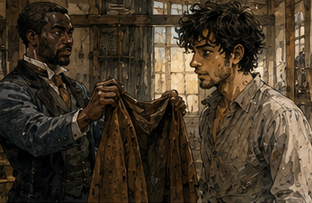
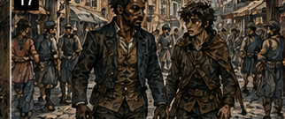
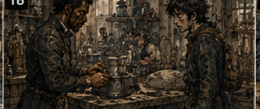

Antonius did not explain what we were doing. I asked before breakfast.
"No." I asked after breakfast.
"No." I asked when he handed me a coat.
"Put it on."
"Why?"
"Because we're leaving."
"Where?"
"No."
"That's not an answer."
"It has worked three times."
The coat was brown, plain, and slightly too short in the sleeves. I looked at it. Then at him.

"This is yours?"
"No."
"Whose?"
"Mine."
"That was a contradiction."
"It was a debtor's."
"Dead?"
"Paid."
"Then why do you have his coat?"
"He didn't want it."
"Why?"
"Greg." I put on the coat. It fit badly. Antonius looked at me.
"Good."
"This is not good."
"You look less like you're about to gamble away rent."
"I don't gamble away rent."
"You gamble away borrowed money."
"Different category."
"Somehow worse."
We left. No Rusk. That was the first unusual thing. The second was that Antonius carried his own ledger. Not the large warehouse ledger. A smaller one, bound in dark leather, worn at the corners. I noticed because of course I noticed. He noticed me noticing.

"No."
"I didn't ask."
"You were going to."
"I was going to ask what's in it."
"No."
"Clients?"
"No."
"Debtors?"
"No."
"Then what?" He looked at me.
"Things I write down." I hated him.
We walked east. For once, I did not immediately ask where. That lasted half a street.
"Why did you start lending money?" Antonius slowed.
Not much. Enough.
"What?"
"Lending. Why?" He looked at me as if I had changed languages.
"You've spent a week asking how much everything costs."
"That's not an answer."
"You've spent another week trying to turn my warehouse into a kingdom."
"Also not an answer."
"And now you want my childhood?"
"No."
"Good."
"I want to know why lending."
"Why?"
I thought about it. That was annoying. Because I knew future Antonius mattered. Because I remembered his name. Because present Antonius was increasingly unlike the crude version I had built from the surviving pieces. Because for eight chapters of my second life,
No.
Not chapters. Days. Because for days I had been asking what I should become and getting increasingly stupid answers. Warrior. Mage. Investor. Gambler. Merchant. All of them. Maybe. And Antonius was right beside me becoming something I already knew would matter. I did not know how. That made him more interesting than me this morning.
"I don't know," I said. Antonius stopped walking. I took two more steps.
Turned.
"What?"
"Nothing."
"You did the face."
"What face?"
"The one where you almost become a person."
"Fuck you." He smiled and kept walking. I followed.
"Why lending?"
"My father lent money."
There. Easy.
"Was he good at it?"
"No."
"Why not?"
"He liked being repaid." I waited. Antonius waited.
"That seems useful in a lender."
"It is."
"But?"
"He liked it too much."
"What does that mean?"
"It means if someone owed him ten and had eight, he took eight and broke the thing that would have made the other two." I thought about Selka Merren.
"You don't."
"Sometimes I do."
"When?"
"When the thing is already broken."
There. Something in my head clicked softly. Not revelation. Interest.
"How do you know?"
"Know what?"
"Whether it's broken." Antonius shrugged.
"You look."
That was an infuriating answer. We reached a butcher. Not a debtor. Apparently. Antonius bought two meat pies. He handed me one. I stared.
"What?"
"Eat."
"Is this coming out of my labor?"
"No."
"Debt?"
"No."
"Then why?"
"Because I don't want to listen to you complain you're hungry in an hour." I ate.
Good pie. Future Antonius had definitely eaten better. Stop. I looked at him instead. Present Antonius ate while walking and caught gravy with his thumb before it hit his coat. Thirty, maybe. I still did not know.
"How old are you?"
"No."
"You know mine."
"I regret knowing yours."
"Thirty-two?"
"No."
"Twenty-eight?"
"No."
"Forty?" He looked offended.
Good.
"Twenty-nine."
"Ah."
"What does that mean?"
"Nothing."
"That was a disappointed ah."
"I expected older."
"Because?" I almost said because I remembered him old.
"Because you have a tired face." He laughed.
We kept walking. The first stop was a cooper's yard. Not the cooper from the green chest. Different man. Antonius spoke with the owner for perhaps six minutes. I expected debt. Instead they discussed barrels. Not prices. Capacity. The cooper had enough work for three months and not enough seasoned wood. Antonius asked how much wood would solve it. The cooper gave a number. Antonius asked what three months of completed barrels would earn.
Another number. Then he asked what happened if the wood arrived late. The cooper said he lost two contracts. Antonius asked who. Names. One I knew faintly. Not important enough to chase. Then Antonius said, "I'll cover the wood." I looked at him. The cooper did too.

"At what?"
"Eight."
"Eight percent?"
"Monthly."
The cooper grimaced.
"Six."
"Eight."
"Seven."
"Eight."
"You're a bastard."
"Yes."
The cooper held out his hand. Antonius shook it. Done. Outside, I said, "That was fast."
"Yes."
"You didn't inspect anything."
"I've known him six years."
"You didn't ask for collateral."
"Barrels."
"Those don't exist yet."
"They will."
"Maybe." Antonius looked at me. I had used his word. He smiled.
"Maybe."
"Why him?"
"He pays."
"That isn't enough."
"It helps."
"Why else?" Antonius kept walking. I followed.
"Good orders."
"Meaning?"
"People who pay him."
"Good margins?"
"Usually."
"Wood shortage is temporary."
"Yes."
"Why not lend more?" Antonius glanced over.
"Why would I?"
"He could expand."
"He doesn't want to."
"Could hire."
"He hates managing."
"Second yard?"
"He hates the first yard." I laughed.
That was useful. Not every business wanted to become a bigger business. Obvious. Also something I routinely forgot.
"What if you offered him a partner?"
"No."
"Why?"
"Because he wants wood."
Constraint.
Right.
We walked another block.
"Your father would have done that?"
"My father would have lent against the yard."
"Why don't you?"
"Don't need to."
"If the cooper fails?"
"I own barrels."
"If he dies?"
"I lose money."
"You say that very calmly."
"I've lost money before."
Interesting. I had too. More than Antonius probably possessed. Maybe. That was not the point. The point was he did not seem insulted by risk. He priced it. Different. Second stop. A woman named Dena Harrow ran a small chandlery near the river. She did not ask Antonius for money. She asked him to wait. That was strange. We waited. I hated waiting. I inspected rope.
Lamp oil. Hooks. Wax. A brass fitting reminded me of the Tere gauge. Pell. Later.
No.
Antonius leaned against the counter. Comfortable. Dena returned with a young man. Her nephew. He wanted to buy half a share in a riverboat. I immediately became interested. Antonius did not. The nephew talked. Fast. Too fast. Boat already working. Three partners. Regular route. Grain downstream, tools and finished goods upstream. Captain experienced. Share available because one partner needed cash. Price twelve gold. He had four.
Wanted eight. I started calculating. River trade. Future route changes. Bridge construction. Flood year. Was there a flood?
Yes.
Which year? Not now. Maybe. Could be relevant. Boat name? The Silver Hen. Nothing. Captain? Jaro Venn. Nothing. Partners? One surname faintly familiar. Stop. Antonius asked, "Why is the share for sale?" The nephew said, "Partner needs cash." Antonius waited. The nephew added, "Family issue." Antonius waited. Dena looked at the boy. The boy shifted.
"Cards."
There.
"How much does he owe?"
"I don't know."
"Who?"
"I don't know." Antonius looked at Dena. She said, "Vale."
Ah. Antonius. The selling partner owed Antonius. That changed the shape.
"How much?" I asked. Antonius looked at me.
"No."
Right.
Not my ledger. The nephew continued pitching. Good boat. Good route. Good captain. Profitable last year. Antonius asked for books. The nephew had copies. Antonius read. Slowly. I wanted them. He did not offer. I looked over his shoulder. He shifted the pages away. Bastard.
"What do you think?" he asked.
Me. I blinked.
"About what?"
"The loan."
There were too many answers. Future river traffic. Partner incentives. Debt chain. Boat condition. Captain. Weather. Cargo concentration. Why share price twelve? Why seller desperate? Could Antonius simply take the share as settlement? Could the nephew,
"What problem are we solving?" I asked.
Antonius's eyebrows rose.
Good.
"The boy wants eight gold."
"To buy a share from your debtor."
"Yes."
"Do you want the share?"
"No."
"Why?"
"I don't want a boat."
That was almost offensively simple.
"Do you want your debtor repaid?"
"Yes."
"Then lending the nephew money could effectively move the debt from a bad borrower to a better one while keeping the underlying asset productive."
Dena looked at me. The nephew looked at me. Antonius looked at me. I continued because apparently I enjoyed danger.
"Assuming he's better." Antonius nodded.
"Is he?" I looked at the nephew. He straightened. He wanted to impress me now.
Wrong instinct.
"How long have you worked on the boat?"
"Three years."
"What do you do?"
"Cargo."
"Meaning?"
"Manifests. Loading. Buyers sometimes."
"Can you sail?"
"Enough."
"Repair?"
"Some."
"How much did the boat clear last year?" He gave a number.
Too quickly. Memorized.
"Your share would produce?" He calculated.
Slowly.
Better.
"Who decides repairs?"
"Captain."
"Who decides cargo?"
"Captain and Jessa."
"Who's Jessa?"
"Partner."
"What do you decide?" He stopped.
There. He wanted ownership. Did he want responsibility? Different.
"Cargo," he said.
"You just said captain and Jessa."
"I help."
"That's not decide."
Dena frowned at me. The boy got defensive.
"I know the route."
"I believe you."
That surprised him. I did. He knew details when Antonius asked. Dock fees. Typical loading delays. Which grain merchants cheated on weight. He knew the work. But ownership in his head was still a promotion. Status. Maybe money. Not yet responsibility. Could learn. Would he? Maybe. I looked at Antonius.
"Not eight."
The nephew protested. Antonius ignored him.
"Why?"
"He knows the operation. Doesn't know the ownership job yet."
"How much?"
"Four?"
The nephew said, "I have four."
"I know." I thought.
If he put all four in, no reserve.
Bad.
"Three from him. Five from you?" Antonius smiled slightly.
"That's eight."
"Yes."
"You said not eight."
"I meant not eight with him only risking four and no operating cushion."
"Why five?"
"Because if you lend five and he keeps one, he has reserve."
"Then he still needs twelve total."
Right.
Math. Four his. Eight requested. I had changed nothing.
Excellent.
I rubbed my face. Dena laughed. Antonius did not rescue me.
"Fine. Different structure." I looked at the seller.
Not present. Could Antonius discount his existing debt to reduce share price? No idea how much debt. Need information.
"How much does the seller owe you?"
"No."
"Then I can't solve it."
"Good." I stared at him. He waited.
Right.
Not my problem to solve. His. He had asked what I thought.
"Then I think the boy is probably worth lending to, but the purchase price may be the bad part of the deal." Antonius nodded.
"Why?"
"Because distressed seller doesn't mean fair price. And if you're already creditor to the seller, you're on both sides whether you admit it or not." Antonius became still.
Dena looked between us. The nephew did not understand. I did not fully understand either. But something was there. Antonius closed the books.
"I'll look at the boat."
The nephew started to speak. Antonius raised a hand.
"Boat first."
"Today?"
"Tomorrow."
"Then?"
"Then maybe."
The boy hated maybe.
Good.
Outside, I said, "You already knew that."
"Knew what?"
"That you were on both sides."
"Yes."
"Then why ask me?"
"I wanted to know if you'd notice."
"Test?"
"Maybe."
"Fuck you." He smiled.
We walked. Three more stops. A cobbler who did not need money but knew a tanner who did. A widow Antonius paid two silver. That stopped me. She did not sign anything. No interest. No ledger that I saw. Antonius gave her two silver and took a small wrapped parcel. Outside, I asked.
"No."
"That wasn't a loan."
"No."
"What was it?"
"Purchase."
"Of what?"
"No."
"You are infuriating."
"Yes." I spent two streets wondering whether the parcel contained contraband. Then Antonius opened it.
Cheese. I stared.
"You bought cheese."
"Yes."
"Why was that secret?"
"It wasn't."
"You acted secretive."
"I said no because I didn't want to explain cheese to you."
"Why two silver?"
"She makes good cheese."
"Two silver is absurd."
"It's for six wheels."
"Oh." He looked at me.
"Do you know what cheese costs?"
"No."
"Then why did you say absurd?"
"Two silver feels like money."
"Yesterday forty gold didn't."
"That was different."
"Of course." He ate a piece of cheese. I held out my hand. He gave me some.
Good cheese. I hated that too. The world was spending less time being about me. I noticed this somewhere between the cheese and the tannery. It was restful. Not empty. Restful. When I looked at Antonius, I did not have to decide whether I should become him. I did not have to compare his skill to my old skill. I did not have to turn every observation into a career option. I could simply ask:
Why does he do that? Then watch. This was apparently much easier for me. That was probably insulting. At the tannery, Antonius refused a loan. The tanner was furious. Good shop. Good demand. Needed money for hides. On paper, similar to the cooper. I waited until we were outside.
"Why no?" Antonius looked pleased.
Not because I asked. Because I had waited.
"Guess."
"Margins?"
"Fine."
"Customers?"
"Fine."
"Demand?"
"Fine."
"Debt?"
"Some."
"Too much?"
"No."
"Then why?"
"His son." I thought back.
Young man near the vats. Quiet.
"Drinks?"
"No."
"Gambles?"
"No."
"Steals?"
"Maybe eventually."
"What?"
"Father wants to expand. Son wants out."
There. I replayed the room. The father had said we. The son had never said anything. When Antonius asked about additional vats, the father answered before the son could. When Antonius asked who handled purchasing, father. Sales, father. Workers, father. The son had looked at the door twice.
"You think the father is borrowing against a future the son won't operate."
"Yes."
"Tell him."
"I did."
"What did he say?"
"That I don't understand family."
"Do you?"
"No."
"Then maybe he's right."
"Maybe." I laughed. Antonius looked at me.
"What?"
"You like that word."
"It's useful."
"It lets you be right later."
"It lets me avoid pretending I'm right now."
That landed harder than it should have. I said nothing. He noticed. Of course. We kept walking. By midday I had stopped asking where we were going. Not intentionally. I simply became interested in the stops. Antonius lent money to a cooper. Considered lending to a boatman. Refused a tanner. Bought cheese.
Extended a warehouse tenant without changing the rate because the tenant's wife had just given birth and Antonius already knew the business was sound. He charged another man more because the man had lied about a second lender. Not because second debt automatically made him unsafe. Because he lied.
"Why does the lie change the rate?" I asked.
"Because now I have to price what else I don't know."
That was good. I stopped walking. Antonius looked back.
"What?"
"That's good."
"What is?"
"The rate isn't punishment."
"No."
"It's uncertainty."
"Mostly."
"Your father?"
"Punishment."
There it was again. Antonius did not lend to good people. He did not even lend to good businesses. He lent where he thought the problem had edges. Temporary shortage. Good order, missing wood. Working boat, bad ownership transition. Sound tenant, bad month. And he refused when the thing producing repayment was itself uncertain. Family succession. Hidden debt.
Bad structure. Broken business. He was not asking:
Will this person repay me? Not exactly. He was asking:
What has to be true for repayment to happen, and which of those things can I actually see? I knew that shape. Support magic.
No.
Don't make it about me. Antonius. What did that become? Future Antonius had influence everywhere. Shipping. Guilds. Construction. Mercenaries. Merchants. Maybe not because he deliberately conquered those sectors. Maybe because he lent into them. Early. When everyone else saw risk. He accumulated claims. Relationships. Information. People who remembered who had said yes before they were safe. I looked at him. He was arguing with a fruit seller over pears.
Not lending. Buying pears. He rejected three. Picked four. Paid. Handed me one. I took it.
"You're not a lender." Antonius bit into his pear.
"No?"
"Not really."
"What am I?" I almost answered.
Then stopped. Too early. He noticed.
"Well?"
"I'm thinking."
"That usually ends badly."
"Your real advantage isn't capital."
"I have very little capital."
"Exactly."
"Thank you."
"It's judgment."
"Everyone thinks they have judgment."
"Yours is specific." He kept walking. I followed.
"You distinguish temporary failure from structural failure." He chewed.
"Do I?"
"Yes."
"Based on one morning."
"Based on the cooper, the boat, the tanner, Merren, my loan, the warehouse tenants, and the fact you didn't take the cooper's yard as security."
"You think about me too much."
"Today."
"Concerning."
"You don't lend because someone is safe. You lend because you think you understand why they're unsafe."
That made him stop. People moved around us. A cart rattled past. Somebody shouted about onions. Antonius looked at me. Not amused now. I continued.
"If the risk is legible, you price it. If the failure is temporary, you bridge it. If the business is good but the timing is bad, you lend. If the business is bad, you don't. If the person lies, the price rises because the unknown part gets bigger." Antonius said nothing. I felt the urge to make it larger.
Network. Information advantage. Cross-industry exposure. Future political leverage. Claims becoming influence. Don't. One problem. One person.
"What?" I asked.
"Nothing."
"That's my line."
"It's a useful line."
"You know I'm right."
"I know you're nineteen."
"Unrelated."
"Very related."
We resumed walking. After a while he said, "My father thought borrowers were people who failed." I waited.
"He liked them ashamed."
That was more than Antonius usually gave me. I did not interrupt.
"He'd sit behind a desk. Make them explain. Make them ask twice. If they couldn't pay, he'd take something."
"Even if taking it made repayment harder."
"Especially then."
"Why?" Antonius shrugged.
"Power." I thought about late-life Greg.
Uncomfortable. Not now. Antonius.
"So you did the opposite."
"No."
"No?"
"I learned why he made money."
"And?"
"People need money." I laughed. He smiled.
"That's it?"
"Mostly."
"You built an entire philosophy around supply and demand."
"I lend money, Greg."
There was something refreshing about how often Antonius refused the grand version of himself. Maybe because he had not become grand yet. Maybe because nobody becomes grand while doing the thing. They just do Tuesday. Then enough Tuesdays happen and someone writes a history.
"What do you want?" I asked. Antonius looked at me.
"Today?"
"No. Eventually."
"Money."
"How much?"
"More."
"That's not an amount."
"It's enough of one."
"Why?"
"So I can lend more." I frowned.
"That's circular."
"Most businesses are."
"No estate?"
"Maybe."
"Title?"
"No."
"Political office?" He looked genuinely disgusted.
Good.
"Guild seat?"
"No."
"Ships?"
"No."
"Factories?"
"No."
"Then what?" Antonius sighed.
"You need everyone to secretly want a kingdom."
"No. I need you to want something."
"I want options."
That shut me up. Options. There it was. Not my version. His. Capital meant he could say yes. Warehouse meant he could take collateral others couldn't. Relationships meant he could evaluate people banks could not. Information meant he could price uncertainty. Every successful loan created more capital, more information, more people, more possible yeses. He did not want the industries. He wanted the ability to move between them.
I laughed. Antonius frowned.
"What?"
"Nothing."
"Greg."
"You like options."
"Yes."
"That's why I remember you."
Silence. Fuck. Too far. Antonius's face changed.
"Remember me?" I bit the inside of my cheek.
"Remember your type."
"My type."
"Annoying men with ledgers."
"Good recovery."
"Thank you."
"Terrible recovery."
"Still." He watched me. I became harmless Greg.
Small smile. Loose shoulders. Young idiot. It happened automatically. Antonius's eyes narrowed. Worse. He had seen the change. Interesting.
"Don't do that," he said.
"What?"
"That."
"I didn't do anything."
"You became younger."
Cold. Not fear. Recognition. He had seen it. Not regression. The role. I laughed. Wrong laugh. He kept looking. I stopped.
"Useful habit," I said.
"For what?"
"People."
"Which people?"
"Most."
"How old are you?"
"Nineteen."
"No."
"We've done this."
"Yes."
"And I still don't like the answer."
"Imagine how I feel."
His eyes sharpened again. I sighed.
"That was a joke."
"Was it?"
"Mostly."
There was his word. He laughed.
Good.
We kept walking. The afternoon became less interesting externally. Paperwork. A warehouse inspection. A conversation with a carter about wheel repairs. Antonius asked me to shut up during two meetings. I succeeded during one. During the other I asked why a merchant was borrowing short-term money to buy goods he would not sell for four months. Antonius kicked my boot. Afterward he said, "Seasonal."
"I know that now."
"You could have known it quietly."
"Less efficient."
"For whom?"
Fair. But something had shifted. I was no longer trying to impress Antonius. That was new. I wanted to understand him. Different impulse. Cleaner. Questions became less performative when I did not need the answer to prove something about Greg. At one point I realized I had gone almost an hour without thinking about my build. No warrior plan. No Barrier timeline. No gambling bankroll.
No shale. No Tere gauge. No question of whether I was wasting my second life. Just Antonius. Borrower. Business. Risk. Why? I felt oddly good. Then I thought about feeling good. Ruined it. At dusk we returned to the warehouse. Rusk was there. He looked at me.
"Still alive."
"Antonius is surprisingly safe." Antonius put the small ledger on his desk.
"No." I pointed at it.
"After an entire day, I deserve one page."
"No."
"Half."
"No."
"Index?"
"No."
"Table of contents?"
"There isn't one."
"That's poor organization." Rusk laughed. Antonius sat. I did not leave. He looked up.
"What?"
"I have a question."
"Of course."
"Why did you lend to me?" Rusk stopped laughing. Antonius leaned back.
There. I had wanted to ask all day. Not because I wanted reassurance. Maybe a little. Because I had now seen enough to know I did not fit his normal decisions. At the time, I had been nineteen. Bronze. No stable income. No collateral worth mentioning. Pitching garbage rock based on a half-remembered future application I could barely explain. Then I had gambled with borrowed money. Objectively, Greg was a terrible borrower. Antonius looked at me for a long moment.
"You had an answer."
"For what?"
"Every objection."
"That's not always good."
"I know that now." Rusk laughed again. Antonius ignored him.
"You asked for too much."
"I remember."
"You weren't embarrassed."
"I was internally."
"No."
Fair.
"You didn't act like someone asking permission."
That surprised me.
"What did I act like?"
"Like I was missing something." I stared. Antonius continued.
"You walked in asking for money like the money was the least interesting part."
That was probably true.
"You thought you had found a thing. Maybe you had. Maybe not. But you weren't selling me the rock."
"What was I selling?"
"You." I grimaced.
"That sounds terrible."
"It was." Rusk said, "Still is."
"Fuck you, Rusk." Antonius smiled.
"You were wrong about half of it."
"Less than half."
"More."
"Debatable."
"You keep being wrong." I crossed my arms.
"Is this going somewhere?"
"Yes." He tapped the desk.
"You correct fast."
Silence. Hessa had said something similar. Pell too, in different words. Once somebody showed me the mistake, I rarely made exactly that mistake again. I made exciting new ones.
"That's why?" I asked.
"Partly."
"What else?" Antonius shrugged.
"You were interesting."
That should not have pleased me. It did.
"Terrible lending standard."
"You're paying."
"Through forced labor."
"Still paying."
"Fair." He opened the ledger.
Conversation over. I stayed.
"One more."
"No."
"What are you trying to make?" Antonius looked up again.
"Money."
"No."
"Greg."
"I mean with all of this." I gestured around the warehouse.
"Loans. Storage. Merchants. Routes. People owing you. People you owe. What does it become?" He frowned.
"I don't know."
There. No embarrassment. No elaborate answer. Just don't know. That was interesting. I knew what it became. Sort of. Power. Reach. A name S-class Greg remembered forty years later. But Antonius did not know. Of course he didn't. He was living forward. I had spent days being angry that I could not perfectly reconstruct my own future path while Antonius was building his without knowing there was a path at all. Maybe that was normal.
Uncomfortable thought. I looked around again. Warehouse. Flour. Bad shelves. Debtors. Cheese. A cooper who needed wood. A boat share Antonius might finance. Selka Merren's cloth. Orlan Tere's worthless forty-gold gauge. Little pieces. Future Antonius had not appeared from a plan called BECOME ANTONIUS VALE. He had kept making decisions. Good ones, apparently. Enough of them.
"What?" Antonius asked. I realized I was smiling.
"Nothing."
"Metaphor face."
"Probably."
"Go home." I did.
Almost. At the door I stopped.
"Antonius." He sighed.
"What?"
"You should keep track of why you say no." He frowned.
"To loans."
"I know what you meant."
"Not just who defaults. Why you refused them. Then check later." Rusk looked interested. Antonius did not react. I continued.
"You already remember patterns. Son wants out. Hidden lender. Bad order. Temporary shortage. Structural problem. Write the reason when you refuse. Six months later, see whether you were right." Antonius stared. I felt the branches trying to come.
Categories. Default models. Industry risk. Borrower types. Information network.
No.
Stop. One suggestion.
"Why?" he asked.
"Because right now your judgment lives in your head."
"So?"
"So you can't tell which part of it is actually good."
That landed. I knew it did. Not because of future knowledge. Because Antonius looked at the small ledger. Just once. Then back at me.
"You done?"
"Yes."
"Actually?" I considered.
"Mostly."
"Go." I left.
Outside, I felt the familiar rush. I could build the system. Obviously. Loan categories. Outcome tracking. Risk weights. Information confidence. Collateral liquidity. Borrower behavior.
No.
Not mine. That was strange. I could see ten ways to improve Antonius. They were clearer than the ten ways I had been trying to improve myself. Maybe because Antonius already existed as a constraint. He wanted options. He had limited capital. He was good at reading temporary failure. He had a warehouse. He had Rusk. He had a growing network. There. Pieces. With myself, every piece kept changing because I kept changing the question. I stopped in the street.
"Oh."
A woman carrying onions walked around me.
"Idiot," she muttered.
"Possibly." I turned back toward the warehouse.
No.
Antonius had told me to go home. Constraint. Home. I went. The cheap room was waiting. So were my notes. For once, I did not open the page labeled GREG. I found a blank sheet. At the top I wrote:
ANTONIUS VALE
Then underneath:
WHAT IS HE ACTUALLY GOOD AT?
I wrote:
- temporary vs structural failure
- pricing uncertainty
- remembering people
- knowing what borrowers need, not what they ask for
- staying close to operations
- saying no
- options I stared at the last word. Then wrote:
WHAT IS HE BAD AT?
That was harder. Interesting. I thought about the day. He kept too much in his head. He relied on personal memory. He knew borrowers because the operation was still small enough to know them. That would not scale. Future Antonius had scaled. So either he solved it, Or somebody solved it for him. My pen stopped. A memory moved. Not a scene. A feeling. Antonius at a table years from now.
Older. Someone beside him. Who?
No.
Gone. Could have been anyone. Could have been me. Dangerous thought. I crossed nothing out. Instead I wrote:
BOTTLENECK: HIS JUDGMENT DOESN'T SCALE.
Then:
POSSIBLE FIX: RECORD DECISION REASONS + OUTCOMES.
Simple. Useful. Not my life. I leaned back. This had taken ten minutes. Ten. I had spent days trying to decide what Greg should become. Antonius took ten minutes. I laughed.
"Fuck."
There was something deeply unfair about being better at other people. Then again, that had always been true. I just had not phrased it that way. Support. Parties. Lovers. Enemies. Give me someone else and I could see the missing piece. Give me myself and apparently I bought every coat in the shop. I looked at the page.
ANTONIUS VALE.
For the first time since waking nineteen again, the future did not feel like a road I had to outrun. It felt like another person. Complicated. Incomplete. Alive. I knew Antonius became important. I did not know how. That meant I got to find out. Strangely, that was more exciting than remembering. I folded the page. Then unfolded it. Added one final line.
DO NOT TELL HIM THE WHOLE THING.
I considered. Underlined it. Twice. Because I knew myself. Then I went to sleep thinking about somebody else.